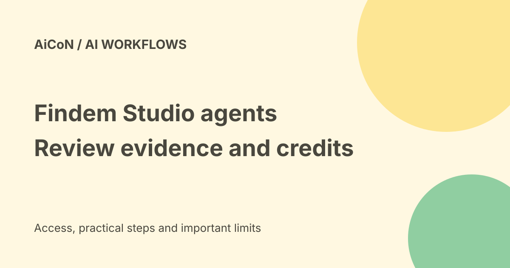

Findem Studio: people-research agents, free trials and credit limits
Findem Studio offers AI agents for people research: hiring briefs, market maps, succession plans and similar work. The company invites people to try an agent free. That does not mean every run or ongoing subscription is free: Studio terms describe credits, paid subscriptions and limits.

What does Studio do?
Studio turns a people-related question into a work product, such as a succession plan, talent-market map, leadership benchmark or hiring brief. Findem says the agents use its people-data foundation and expert methods, with evidence and reasoning to support the result. These are vendor claims, not a guarantee that a candidate record or conclusion is accurate.
The public site groups workflows around executive search, talent acquisition and HR consulting. It features Role Talent Flow, which looks at movement into and out of a role; Succession Planning, which builds a possible successor slate; and Role Calibration, which helps define a role and compare it with the market.
Ways to use it
Findem lists three paths: run existing agents directly in Studio, use them inside the Findem platform, or call agents through MCP from a compatible AI client. MCP is a connection format that lets an AI client use another service's tools. It does not remove that service's account, permission or billing requirements.
The public Studio page says to choose a role, define your needs and run a guided workflow. Work and results can be organised in projects or continued in chat. Building an agent is a separate option for teams that want their own method and checks.
Is it free?
Findem's 22 September 2026 launch announcement says people can try Studio agents free at studio.findem.ai/solutions. The terms, however, describe Studio as a subscription-based service that measures or charges some usage in credits. Trials and promotional credits may be offered.
Credit amounts, consumption rates, expiry and reset rules depend on the purchase terms or what the service shows. Subscription credits normally do not roll over unless the terms say otherwise. Paid subscriptions may renew automatically. We did not verify an account-specific free-credit amount, paid price or renewal schedule. Check these before starting a run, especially if a payment method is attached.
India and Kerala fit
This is mainly useful for recruiters, executive-search teams and HR consultants, not a general job-search guarantee. The public pages do not provide an India-specific data-coverage promise or a rupee price. A global product page does not prove that its records are complete for Kerala companies or a particular Indian role.
Ask for evidence dates, source coverage and the geographic scope of a result. Treat missing profiles as missing data, not proof that a person lacks a skill or that a company has no suitable candidates.
A safe first trial
- Open the official Studio solutions page and choose a workflow relevant to your role.
- Read the trial, credit and account terms shown before running it. Do not assume the word free covers unlimited work.
- Start with a narrow, non-sensitive research question. Define the region, role and period clearly.
- Check the delivered artifact, evidence links, dates and assumptions against original records.
- Have a human review any candidate ranking or employment conclusion. Only share a result with people authorised to see it.
We read the public pages and terms but did not create an account, run an agent or connect MCP.
Privacy checks
The terms require customers to have appropriate permissions and notices for personal data, including candidate data. They say not to submit sensitive or high-risk data unless the applicable agreement permits it. Before uploading internal talent lists or reviews, check your organisation's rules and the data-processing agreement. Do not upload identity numbers, health records or private performance notes just to test the product.
Frequently asked questions
Is Studio a free unlimited chatbot?
No such promise was verified. The launch offers free trials; the terms allow credit-based paid use.
Does evidence mean every conclusion is right?
No. Verify the evidence, date and inference separately.
Can it make hiring decisions alone?
The terms require appropriate human review for significant people decisions.
What changed since the earlier post?
This guide adds the current direct Studio workflow, the trial-versus-subscription distinction, credit expiry and renewal caveats, and the need for human review. India coverage and real trial results remain untested.
Sources: Findem Studio product page · Launch and free trial announcement · Public Studio workflows · Studio terms. Checked 7 October 2026.